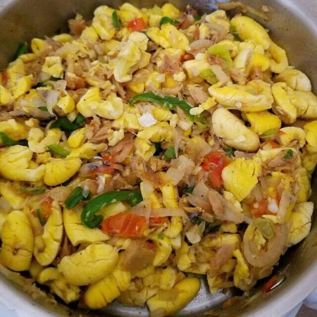
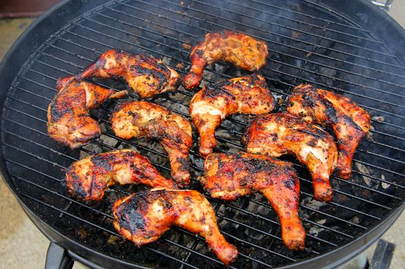

Ackee and Saltfish, Jamaica's National Dish. When visiting Jamaica, one of the must-try dishes is our national dish, Ackee and Saltfish. It is the most popular among our guests and is available as part of the taste of Jamaica dish during breakfast on Tuesdays and Fridays.

Jerk is a style of cooking native to Jamaica, in which meat is dry-rubbed or wet marinated with a hot spice mixture called Jamaican jerk spice. Some historians believe it was originally developed by Maroons, African slaves who escaped into the wilds of Jamaica when the British captured the island from Spain in 1655.